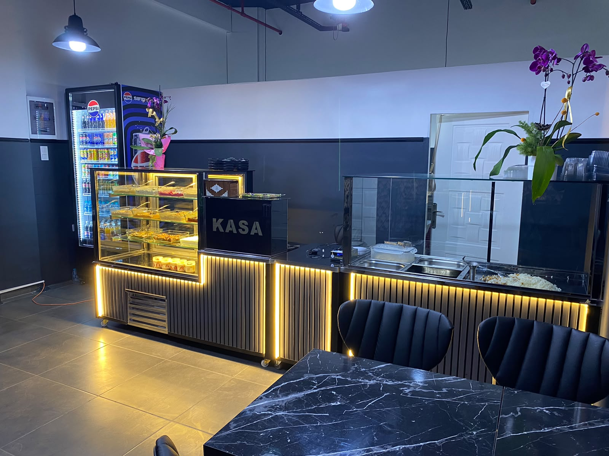

İş yerinize, davetinize
bol lezzet.
İş yerleri ve ofisler için düzenli yemek; mevlüt yemeği, düğün ve özel davetler için toplu yemek. İhtiyacınıza uygun menüyü ve yemek planını birlikte oluşturalım.

İhtiyacınıza göre yemek hizmeti.
Hizmet seçin, teklif formunda ayrıntıları tamamlayın. Ekibinizin günlük öğününden özel gün organizasyonlarına kadar talebinizi birlikte değerlendirelim.
Ekibinize düzenli yemek.
Ofis ve iş yerleri için günlük veya haftalık yemek ihtiyacınızı, çalışma günlerinizi ve kişi sayınızı paylaşın.
Bu hizmet için teklif al →02 / MEVLÜT YEMEĞİMevlüt yemeği.
Mevlüt ve hayır yemekleri için tarih, kişi sayısı ve menü tercihinize göre teklif isteyin.
Bu hizmet için teklif al →03 / DÜĞÜN & NİŞANÖzel gününüzün menüsü.
Düğün ve nişan organizasyonları için yemek saati, servis beklentisi ve davetli sayısını birlikte planlayalım.
Bu hizmet için teklif al →04 / ÖZEL DAVETBir araya geldiğiniz her an.
Toplantı ve özel davetler için tek seferlik toplu yemek ihtiyacınızı iletin.
Bu hizmet için teklif al →İhtiyacınızı anlatın.
Menüyü planlayalım.
Tavuk, pilav, makarna ve meze seçenekleriyle düşündüğünüz menüyü paylaşabilirsiniz. Fiyat, minimum kişi sayısı, teslimat bölgesi ve servis seçenekleri talebinize göre görüşülür.
- Organizasyon bilgilerinizi hazırlayın.
- Talebinizi WhatsApp üzerinden gönderin.
- Uygunluk, menü ve fiyatı birlikte netleştirelim.
Bu form kesin sipariş veya rezervasyon oluşturmaz. Talebiniz, WhatsApp’ta gönder düğmesine bastığınızda bize ulaşır. Kesinleşme, karşılıklı onayla yapılır.
İlçenizi seçin, birlikte planlayalım.
İlçenize tıklayarak teklif formuna konum ekleyin. Teslimat uygunluğu; adres, kişi sayısı ve tarihe göre görüşülerek netleştirilir.
Restoranımız Küçükçekmece’de. İlçe seçimi teslimat onayı oluşturmaz; uygunluğu teklif görüşmesinde teyit edelim.
Toplu yemek hakkında.
Kaç kişilik sipariş verebilirim?
Kişi sayınızı talep formunda paylaşın. Minimum miktar ve kapasite, tarih ve menüye göre görüşülerek netleştirilir.
Fiyat nasıl belirleniyor?
Kişi sayısı, menü içeriği, tarih ve servis beklentinize göre teklif hazırlanır. Bu sayfada sabit bir paket fiyatı veya teslimat taahhüdü bulunmaz.
Ne kadar önceden iletişime geçmeliyim?
Tarihiniz belli olduğunda iletişime geçmenizi öneririz. Uygunluk ve hazırlık süresi işletmeyle görüşülerek belirlenir.
Formu gönderince siparişim kesinleşir mi?
Hayır. Form bir teklif talebidir. WhatsApp mesajınızı gönderdikten sonra tarih, menü, teslimat veya teslim alma, fiyat ve ödeme koşulları karşılıklı onaylanmalıdır.